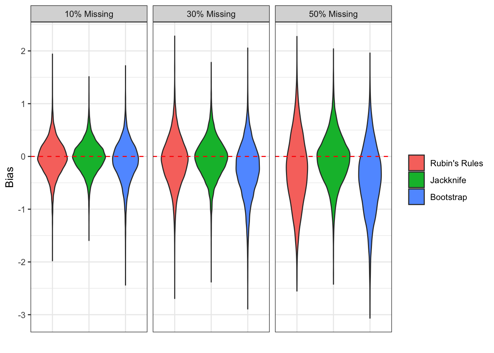
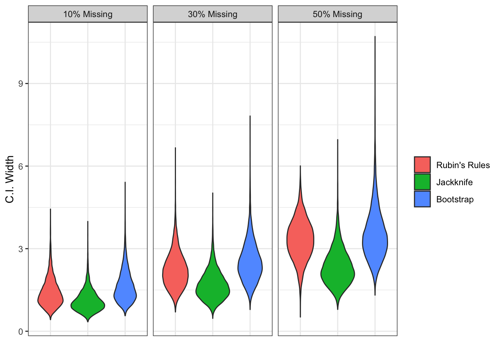
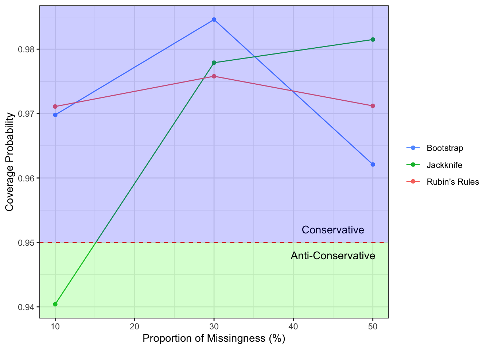

Jackknifing is superior to bootstrapping when working with small multiply imputed datasets under uncongeniality.
Robust Multiple Imputation Estimation Under Uncongeniality
Ihsan E. Buker 1
ieb2@students.uwf.edu
Samantha R. Seals1
Introduction
Multiple imputation is one of the most commonly utilized approaches to provide valid inferences with missing observations. When the imputation model and the analysis model make different assumptions about the data, uncongeniality occurs, which can lead to invalid inferences from MI estimators.
We propose using jackknife subsampling prior to multiple imputation as a means to mitigate issues that may arise due to uncongeniality in smaller datasets.
Overview

White textalfkdjjjjjjjjjjjjjjjjjjjjjjjjjjjjjjjjjjjjjjjjjjjjjjjjjjjjjjjjjjjjjjjjjjjjjjjjjjjjjjjjjjjjjjjjjjjjjjjjjjjjjjjjjjjjjjjjjjjjsldfsakkkkkkkkkkkkjjjjjjjjjjjjjjjjjjjjjjjjjjjjjjjjjjjjjjjjjjjjjjjjajjjjjjjjjjjjjjjjjjjjjjjjjjjjjjjjjjjjjjjjjjjjjjjjjjjjjjjjjjjjjjjjjjjjjjjjjjjjjjjjjjjjjjjjjjjjjjjjjWhite textalfkdjjjjjjjjjjjjjjjjjjjjjjjjjWhite textalfkdjjjjjjjjjjjjjjjjjjjjjjjjjjjjjjjjjjjjjjjjjjjjjjjjjjjjjjjjjjjjjjjjjjjjjjjjjjjjjjjjjjjjjjjjjjjjjjjjjjjjjjjjjjjjjjjjjjjjsldfsakkkkkkkkkkkkjjjjjjjjjjjjjjjjjjjjjjjjjjjjjjjjjjjjWhite textalfkdjjjjjjjjjjjjjjjjjjjjjjjjjjjjjjjjjjjjjjjjjjjjjjjjjjjjjjjjjjjjjjjjjjjjjjjjjjjjjjjjjjjjjjjjjjjjjjjjjjjjjjjjjjjjjjjjjjjjsldfsakkkkkkkkkkkkjjjjjjjjjjjjjjjjjjjjjjjjjjjjjjjjjjjjjjjjjjjjjjjjajjjjWhite textalfkdjjjjjjjjjjjjjjjjjjjjjjjjjjjjjjjjjjjjjjjjjjjjjjjjjjjjjjjjjjjjjjjjjjjjjjjjjjjjjjjjjjjjjjjjjjjjjjjjjjjjjjjjjjjjjjjjjjjjsldfsakkkkkkkkkkkkjjjjjjjjjjjjjjjjjjjjjjjjjjjjjjjjjjjjjjjjjjjjjjjjajjjjWhite textalfkdjjjjjjjjjjjjjjjjjjjjjjjjjjjjjjjjjjjjjjjjjjjjjjjjjjjjjjjjjjjjjjjjjjjjjjjjjjjjjjjjjjjjjjjjjjjjjjjjjjjjjjjjjjjjjjjjjjjjsldfsakkkkkkkkkkkkjjjjjjjjjjjjjjjjjjjjjjjjjjjjjjjjjjjjjjjjjjjjjjjjajjjjWhite textalfkdjjjjjjjjjjjjjjjjjjjjjjjjjjjjjjjjjjjjjjjjjjjjjjjjjjjjjjjjjjjjjjjjjjjjjjjjjjjjjjjjjjjjjjjjjjjjjjjjjjjjjjjjjjjjjjjjjjjjsldfsakkkkkkkkkkkkjjjjjjjjjjjjjjjjjjjjjjjjjjjjjjjjjjjjjjjjjjjjjjjjajjjjjjjjjjjjjjjjajjjjWhite textalfkdjjjjjjjjjjjjjjjjjjjjjjjjjjjjjjjjjjjjjjjjjjjjjjjjjjjjjjjjjjjjjjjjjjjjjjjjjjjjjjjjjjjjjjjjjjjjjjjjjjjjjjjjjjjjjjjjjjjjsldfsakkkkkkkkkkkkjjjjjjjjjjjjjjjjjjjjjjjjjjjjjjjjjjjjjjjjjjjjjjjjajjjjWhite textalfkdjjjjjjjjjjjjjjjjjjjjjjjjjjjjjjjjjjjjjjjjjjjjjjjjjjjjjjjjjjjjjjjjjjjjjjjjjjjjjjjjjjjjjjjjjjjjjjjjjjjjjjjjjjjjjjjjjjjjsldfsakkkkkkkkkkkkjjjjjjjjjjjjjjjjjjjjjjjjjjjjjjjjjjjjjjjjjjjjjjjjajjjjjjjjjjjjjjjjjjjjjjjjjjjjjjjjjjjjjjjjjjjjjjjjjjjjjjjjjjjjjjjjjjjjjjjjjjjjjjjjjjjjjjjjjjjjjjjsldfsakkkkkkkkkkkkjjjjjjjjjjjjjjjjjjjjjjjjjjjjjjjjjjjjjjjjjjjjjjjjajjjj
Methods
Three covariates were simulated from the following normal distribution. \[ \begin{bmatrix} V_1 \\V_2 \\ V_3 \end{bmatrix} \sim N\left(\begin{bmatrix} 1\\ 1 \\ 1 \end{bmatrix}, \begin{bmatrix} 1 & 0.5 & 0.5 \\ 0.5 & 1 & 0.5 \\ 0.5 & 0.5 & 1 \end{bmatrix}\right) \]
And the outcome variable \(Y\) was defined in the following manner.
\[ Y = \sum^3_{i=1} {V_i \cdot \beta_{V_i}} + \epsilon \sim N(\mu = 0, \sigma \propto V_2) \] Where
\[ \beta_{V_1} = 2 ; \ \beta_{V_2} = 5 ; \ \beta_{V_3} = 8 \] The analysis model of interest was: \[ \widehat{Y} \sim \widehat{\beta}_{V_1} + \widehat{\beta}_{V_2} + \widehat{\beta}_{V_3} \]
30,000 datasets were simulated with sample size \(n = 50\). Based on dataset characteristics, the ideal number of subsamples/resamples was found to be \(j = 200\), and the number of imputations \(m=10\) when the method of inference was Rubin’s Rules, and \(m=2\) otherwise. Lastly, the goal of the analysis was to estimate \(\beta_{V_1}\).
Results

Figure 1: Jackknife obtained least bias across all levels of missingness.
Across all levels of missingness, the jackknife estimator obtained the least biased estimates of \(\beta_{V_1}\). Nearly all methods were unbiased at lower levels of missingness; however, at higher levels of missingness, only the jackknife estimator was unbiased. Lastly, we see that the jackknife estimates maintained their consistency even at higher levels of missingness, where other appraoches began producing highly varied estimates of \(\beta_{V_1}\).

Figure 2: Jackknife obtained narrowest C.I. width while attaining nominal coverage.
The jackknife estimator provided the narrowest confidence intervals across all levels of missingness while still attaining near-nominal coverage.

Figure 3: The methods examined tended to generate conservative confidence intervals, which may be improved by alternative parameters.
All approaches had a tendency to produce conservative confidence intervals, which might be improved by changing the number of imputations, subsamples/resamples, etc..
| Method | Mean | SD | Range |
|---|---|---|---|
| Rubin’s Rules | 318.1 | 8.7 | 36.9 |
| Jackknife | 867.6 | 16.1 | 83.5 |
| Bootstrap | 7287.6 | 144.3 | 591.6 |
Unsuprisingly, Rubin’s Rules was the fastest approach, which was nearly two and a half times faster than the jackknife approach and 23 times faster than the bootstrap approach. In contrast, the jackknife approach was nearly eight and a half times faster than the bootstrap approach.
Future Direction
The performance of the proposed approach will be evaluated under situations frequently encountered in real-world datasets, such as missing covariates, data types besides continuous, and mechanisms besides missing at random.